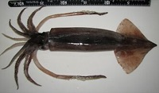

するめいか（鯣烏賊）の漁獲量 都道府県ランキング
全32県の順位と、とれた量
するめいかが日本でいちばん多くとれるのは青森県です。5,428 tで、全国（1万9,850 t）の27%を占めます。

| 順位 | 都道府県 | 漁獲量 | 全国に占める割合 |
|---|---|---|---|
| 1位 | 青森県 | 5,428 t | 27% |
| 2位 | 北海道 | 3,139 t | 16% |
| 3位 | 岩手県 | 2,690 t | 14% |
| 4位 | 宮城県 | 2,583 t | 13% |
| 5位 | 富山県 | 975 t | 4.9% |
| 6位 | 石川県 | 906 t | 4.6% |
| 7位 | 長崎県 | 764 t | 3.8% |
| 8位 | 鳥取県 | 571 t | 2.9% |
| 9位 | 宮崎県 | 336 t | 1.7% |
| 10位 | 新潟県 | 311 t | 1.6% |
| 11位 | 島根県 | 304 t | 1.5% |
| 12位 | 福井県 | 273 t | 1.4% |
| 13位 | 福島県 | 238 t | 1.2% |
| 14位 | 秋田県 | 206 t | 1.0% |
| 15位 | 山形県 | 199 t | 1.0% |
| 16位 | 兵庫県 | 180 t | 0.9% |
| 17位 | 愛媛県 | 165 t | 0.8% |
| 18位 | 茨城県 | 86 t | 0.4% |
| 19位 | 山口県 | 83 t | 0.4% |
| 20位 | 千葉県 | 75 t | 0.4% |
| 21位 | 佐賀県 | 57 t | 0.3% |
| 22位 | 三重県 | 49 t | 0.2% |
| 23位 | 高知県 | 37 t | 0.2% |
| 24位 | 静岡県 | 33 t | 0.2% |
| 25位 | 愛知県 | 28 t | 0.1% |
| 26位 | 和歌山県 | 25 t | 0.1% |
| 27位 | 大分県 | 24 t | 0.1% |
| 28位 | 京都府 | 17 t | 0.1% |
| 29位 | 福岡県 | 14 t | 0.1% |
| 30位 | 徳島県 | 4 t | 0.0% |
| 31位 | 熊本県 | 1 t | 0.0% |
| 32位 | 鹿児島県 | 1 t | 0.0% |
するめいかの漁獲量の推移（令和2年〜令和6年）
全国の漁獲量は、令和2年の4万8,289 tから令和6年の1万9,850 tへ、59%減りました。1位は入れ替わっています（令和2年は青森県、令和3年は北海道、令和5年は青森県）。
| 年 | 全国 | 1位 | 2位 | 3位 |
|---|---|---|---|---|
| 令和6年 | 1万9,850 t | 青森県5,428 t | 北海道3,139 t | 岩手県2,690 t |
| 令和5年 | 2万1,248 t | 青森県5,370 t | 北海道5,012 t | 岩手県2,523 t |
| 令和4年 | 3万717 t | 北海道8,470 t | 青森県7,783 t | 石川県3,248 t |
| 令和3年 | 3万2,445 t | 北海道8,755 t | 青森県7,250 t | 長崎県3,768 t |
| 令和2年 | 4万8,289 t | 青森県1万1,854 t | 北海道9,854 t | 岩手県4,391 t |
この数字について
- 分類：烏賊の仲間
- 全国の漁獲量：1万9,850 t
- この数字が表すもの：漁獲量（海でとった重さ。養殖は含みません）
- 調査：海面漁業生産統計調査（海面漁業） 令和6年
- 32県分を調査（調査していない県は順位に入りません）
するめいかの漁獲量について、よくある質問
- するめいかの漁獲量が日本一の都道府県はどこですか？
- 青森県です。海面漁業生産統計調査（海面漁業）（令和6年）で5,428 tでした。
- するめいかの漁獲量ランキング2位・3位はどこですか？
- 2位は北海道（3,139 t）、3位は岩手県（2,690 t）です。
- するめいかの漁獲量ランキング4位・5位はどこですか？
- 4位は宮城県（2,583 t）、5位は富山県（975 t）です。するめいかの全32県の順位は上の表のとおりです。
- するめいかの全国の漁獲量はどれくらいですか？
- 1万9,850 t（令和6年）です。